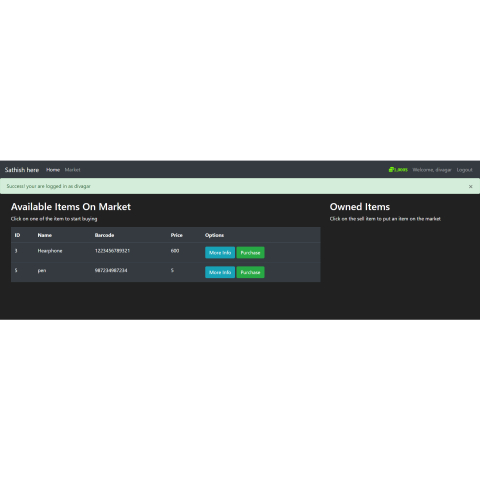

Flask Market
Flask Market, flask works on the concepts of MVC, {Model, Views, Control}. Flask is an microframe work, mosty used to create Api. For small scale application flask works fantasticaly, while moving towards the large scale application, Django will be recommended by all.
Unlike in Django, in Flask we dont have any of the middleware to support our User-Authendication and the DataBase Vizualization. Everything should be done by our own, that the best part, If your new to django, kindly spend some time in the flask, you can able to figure whats the things get happening behind, this will be very useful and you will be get cleared about everything when you move to django
In this market Application, the front_end par is created using the HTML and CSS Bootstrap, flask-forms are used to create the Sign-up and Sign-in pages, the Validation and authedenticaion should be managed by own query part. Valid User can able to buy the products in the market are added into the cart , add can able to sell this them to put back in the original position